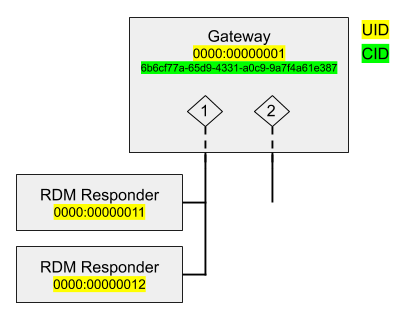
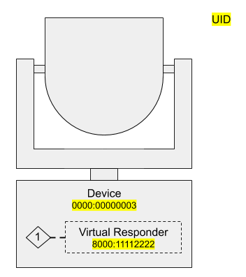
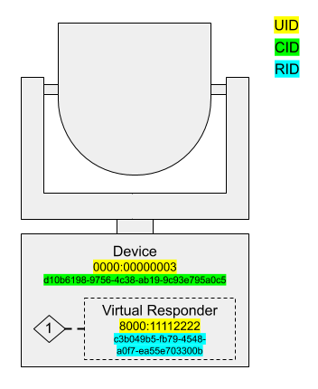

- Generated by
 1.9.1
1.9.1
|
RDMnet
HEAD (unstable)
Implementation of ANSI E1.33 (RDMnet)
|
View other versions:
|
RDMnet is closely tied to Streaming ACN (ANSI E1.31, aka sACN); RDMnet devices are often also senders or receivers of sACN. Typically, sACN is used for live control data, whereas RDMnet is used for "pre-show" configuration. This pairing between the two protocols motivates RDMnet's model of a device.
Devices can be thought of as containing a set of RDM responders, each of which accepts some RDM configuration. Every device has a special RDM responder known as the Default Responder which represents the top-level configuration data about the device - its name, manufacturer, IP addressing information, etc.
If a device only implements RDMnet, not RDM or sACN, the default responder is all that's needed; it can contain all of the RDMnet-configurable information about the device. But when a device starts interacting with sACN or RDM, things get a bit more complex.
Consider the example of a 2-port DMX/RDM gateway:

One of the main ways RDMnet adds value is by providing a standard way of interfacing with RDM responders through gateways. Each port on the two-port gateway is represented by an endpoint in the RDMnet protocol. RDM responders are associated with endpoints; this association represents which gateway port they are connected to.
ANSI E1.37-7, an extension to RDM, provides RDM messages for getting information about RDMnet gateways. The ENDPOINT_LIST message is used to retrieve a list of endpoints on a gateway, and the ENDPOINT_RESPONDERS message is used to get a list of RDM responders on each endpoint.
Every RDM responder except for the default responder is associated with an endpoint. Endpoint numbers are 16-bit values, starting at 1. To address a responder on an endpoint, you must include the endpoint number in the RDMnet message. When addressing the default responder, this field is set to a reserved value, NULL_ENDPOINT (0).
In the above figure, the default responder has a UID 0000:00000001. To send an RDM command addressed to the gateway itself, using the RDMnet controller API, we would use the following addressing information:
The gateway is also connected to two RDM responders, which are attached to port 1 (which the gateway represents over RDMnet as endpoint 1). To address one of these responders, we would:
ANSI E1.37-7 provides the ENDPOINT_TO_UNIVERSE RDM command which allows a nonzero endpoint to be assigned to a universe of sACN. The default responder handles this command and uses it to manage the patching of ports to DMX universes; this provides a standard way to assign universes to ports on RDMnet-enabled gateways.
Note that this only handles basic one-to-one patching of universes to ports; advanced patching techniques which assign portions of universes or individual addresses are outside the scope of the RDMnet standard and are typically done with vendor-specific configuration software.
In RDMnet, devices that consume sACN without converting it to the DMX512 physical layer represent this functionality using virtual endpoints, which contain RPT responders (aka virtual responders). A good example of this is a network-connected moving light:

As above, the device's default responder (represented by UID 0000:00000003) represents the device's top-level RDMnet configuration information. The portion of the device that acts on sACN data is modeled as endpoint 1, and can be patched to an sACN universe by the ENDPOINT_TO_UNIVERSE command. A virtual responder (represented by the dynamic UID 8000:11112222) receives RDM commands related to the device's DMX operation, including setting the DMX start address.
One way to think of a network-connected fixture in RDMnet is as containing a virtual one-port gateway, with the actual fixture (and its RDM responder) connected to its DMX512 port. The default responder represents the properties of the fixture's RDMnet gateway, and the virtual responder represents the properties of the fixture itself.
Both top-level RDMnet devices and virtual responders can be identified by dynamic UIDs (see Roles and Addressing for more information on dynamic UIDs). Because the UID of these responders can change over time, RDMnet requires them to also have an unchanging identifier that controllers can use as a primary key for the responder. For default responders, this unchanging identifier is the device's CID. However, virtual responders do not have a CID and thus must have a different identifier. This identifier is (you guessed it) another UUID, called a Responder ID (RID).
Here is an updated version of the previous example with the full set of identifying information about the responders, including the persistent identifiers:

RIDs are not present in the RDM messaging used in RDMnet; mappings between RID and UID are provided by a broker on request from a controller.